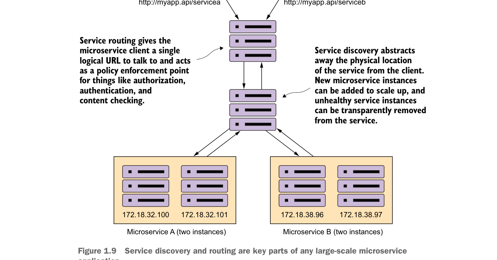

Khám phá dịch vụ và định tuyến là các phần then chốt của mọi ứng dụng microservice quy mô lớn.
- Định tuyến dịch vụ—Làm thế nào để bạn cung cấp một điểm vào duy nhất cho tất cả các dịch vụ của mình để các chính sách bảo mật và quy tắc định tuyến được áp dụng thống nhất cho nhiều dịch vụ và phiên bản dịch vụ trong ứng dụng microservice của bạn? Làm thế nào để đảm bảo mỗi nhà phát triển trong nhóm của bạn không phải tự nghĩ ra giải pháp riêng để cung cấp định tuyến cho dịch vụ của họ? Tôi sẽ trình bày định tuyến dịch vụ ở chương 6.
Trong hình 1.9, khám phá dịch vụ và định tuyến dịch vụ dường như có một chuỗi sự kiện được mã hóa cứng giữa chúng (trước tiên là định tuyến dịch vụ rồi đến khám phá dịch vụ). Tuy nhiên, hai mẫu này không phụ thuộc lẫn nhau. Chẳng hạn, chúng ta có thể triển khai khám phá dịch vụ mà không cần định tuyến dịch vụ. Bạn có thể triển khai định tuyến dịch vụ mà không cần khám phá dịch vụ (mặc dù việc triển khai sẽ khó hơn).
1.9.3 Các mẫu khả năng phục hồi của client microservice
Bởi vì kiến trúc microservice có tính phân tán cao, bạn phải cực kỳ cẩn trọng trong cách ngăn chặn một vấn đề ở một dịch vụ (hoặc phiên bản dịch vụ) khỏi